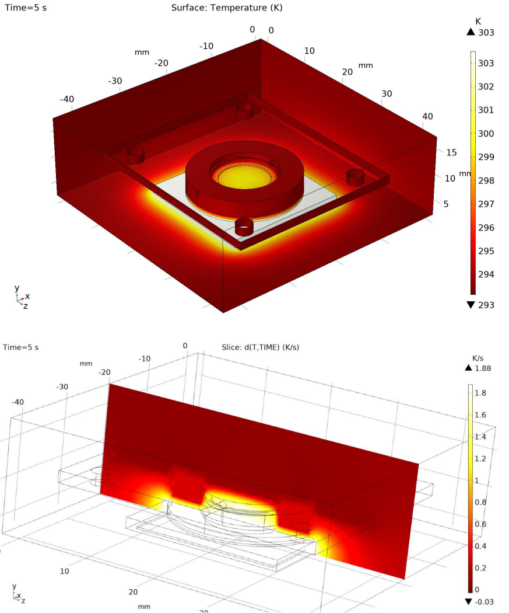

Our Senior Spring Capstone class, K, pairs student groups with project sponsors. The team then works to determine exactly what the sponsor wants and how best to achieve those goals. In my case, we (myself, Rebecca Lin, Henry Windsor, and Ashan Ranmuthu) worked with Dr. Tanya Hutter on a sensor project. Our primary tasks were improving thermal control, volume, and sensor functionality. My role on the team was primarily CAD and simulations, using COMSOL Multiphysics. This involved learning the software from the ground up and then building and executing our required simulations. Despite my prior experience with ANSYS and OpenFoam, the primary difficulty in my role was learning a relatively obtuse simulation software from scratch.
Ultimately, we designed a solution that passed our requirements with flying colors. Below you will find a number of my final simulation plots, with brief explanations of their significance. These plots were used in our final presentation and paper, and needed to convey our results to both Dr. Hutter, who was entirely familiar with the project, and to our professors and TAs who had no prior knowledge. Additionally, this text links to an excerpt from our paper concerning the simulations and the conclusions drawn from them.
Plot of Temperature Isosurfaces for Steady State Heat Sink Simulation, Course (Top) and Normal (Bottom) Meshes
Surface Plot of Temperature and Slice Plot of Rate of Temperature Change at 5s